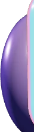
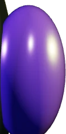
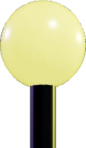
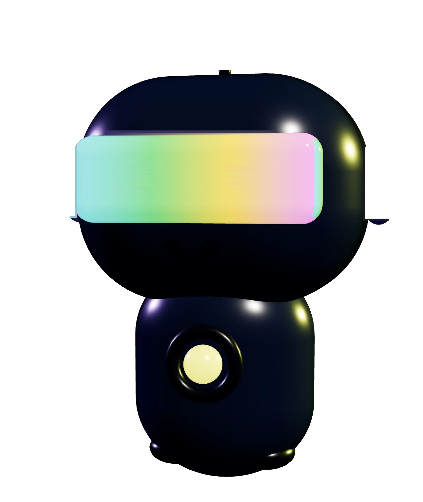
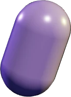
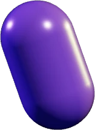
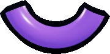

El mismo bordy-m2.webp despiezado en capas. El LED de la antena sigue siendo el semáforo del juego en todos los estados.







Estado: reposo · LED
Estados
Racha: los ojos se vuelven llamas 🔥 mientras festeja con tres brincos y los brazos bombeando. Pensando reworkeado: cabeza ladeada, brazo en la barbilla, los ojos barren de lado a lado y vuelven los puntitos.
El LED cambia de color en todos los estados (desvío ahora es naranja, antes era idéntico al reposo).